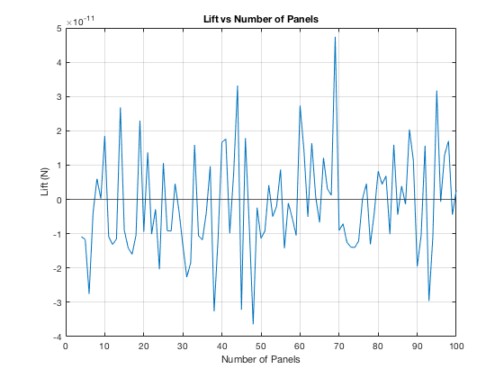
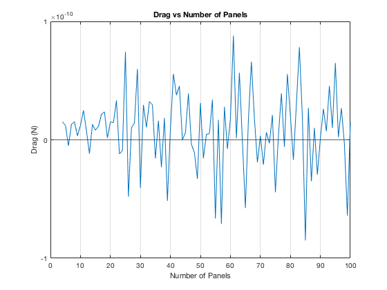
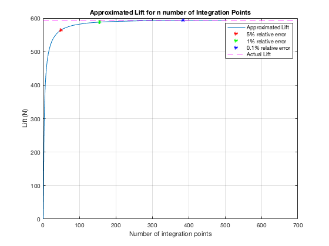
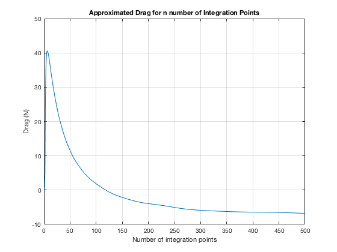

Contents
ASEN 3111 - Computational Assignment 01 - Main
Approximate the lift and drag per unit span on a stationary cylinder.
Author: Margaux McFarland
Collaborators:
Date: 9/17/19
clc
clear all
close all
Problem 1
d = 1;
v = 30;
rho = 1.225;
p = -101.3e3;
q = (1/2)*rho*v^2;
a = 0;
b = 2*pi;
N = 100;
theta = a:b/(N*2):b;
c_p = 1 - 4.*(sin(theta)).^2;
P = q*c_p + p;
lift_func = -P.*sin(theta).*(d/2);
drag_func = P.*cos(theta).*(d/2);
Lift = simpRule(lift_func, a, b, N, theta)
Drag = simpRule(drag_func, a, b, N, theta)
plotLift(a, b, p, q, d, N)
fprintf("The minimum number of panels needed to accurately apporximate the lift and/or drag is 2 panels.\n");
Lift =
2.6233e-12
Drag =
1.4934e-11
The minimum number of panels needed to accurately apporximate the lift and/or drag is 2 panels.
 
part b
n = 30;
[L,D] = airfoilLiftDrag(n)
N_high = 500;
[L_actual, D_actual] = airfoilLiftDrag(N_high)
fprintf("Number of equispaced integration points required to obtain a lift soltuion with...\n");
for i = 0:500
[L1, ~] = airfoilLiftDrag(i);
if abs(L_actual - L1) <= 0.05*L_actual
fprintf("5 percent relative error: %d\n", i);
for j = i:500
[L2, ~] = airfoilLiftDrag(j);
if abs(L_actual - L2) <= 0.01*L_actual
fprintf("1 percent relative error: %d\n", j);
for k = j:500
[L3, ~] = airfoilLiftDrag(k);
if abs(L_actual - L3) <= 0.001*L_actual
fprintf("1/10 percent relative error: %d\n", k);
break;
end
end
break;
end
end
break;
end
end
alpha = 9;
plotLift2(p, q, d, 500, alpha, i, j, k, L1, L2, L3, L_actual);
L =
542.3095
D =
20.6485
L_actual =
594.0019
D_actual =
-6.7945
Number of equispaced integration points required to obtain a lift soltuion with...
5 percent relative error: 50
1 percent relative error: 155
1/10 percent relative error: 385
 